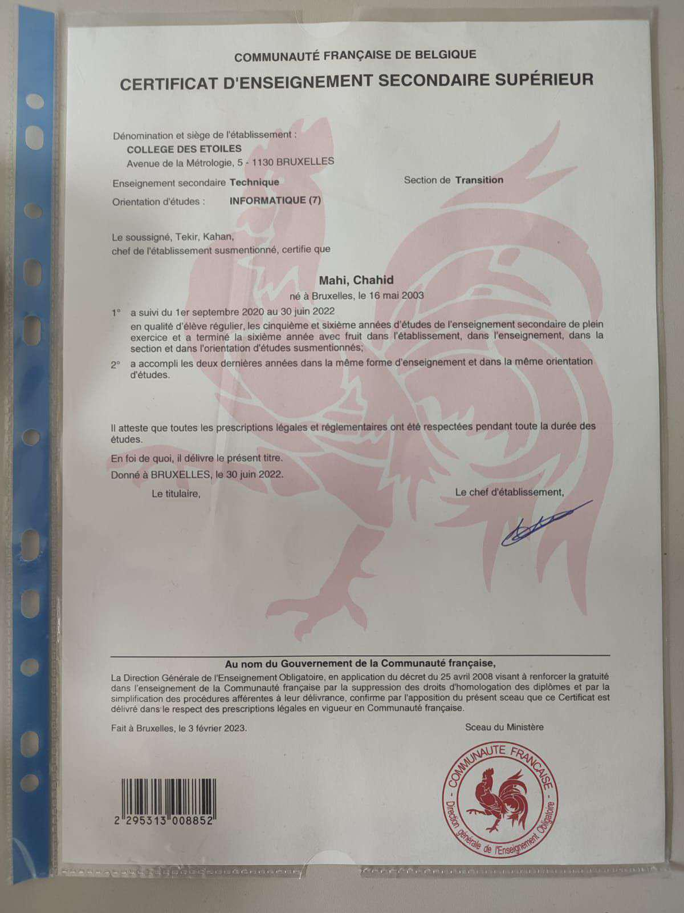
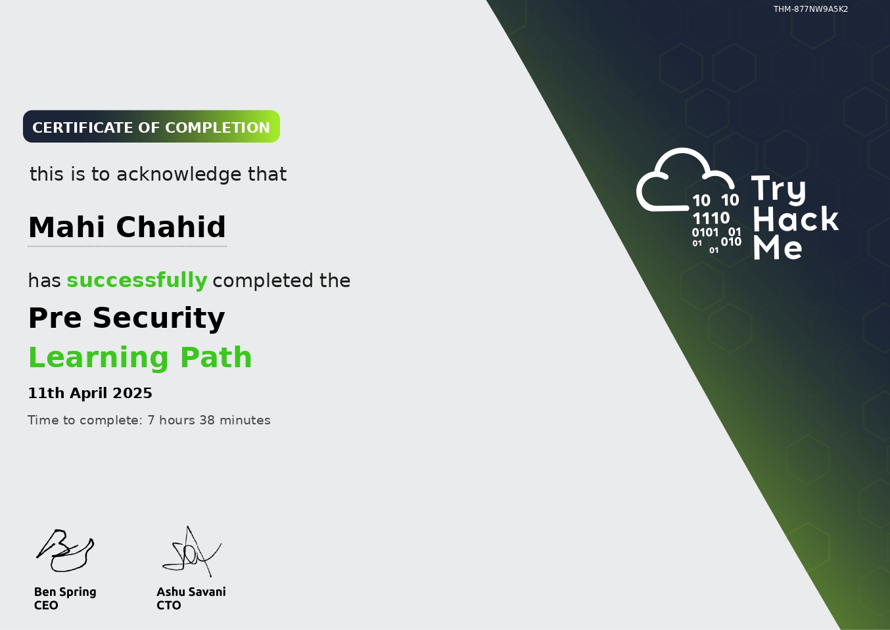
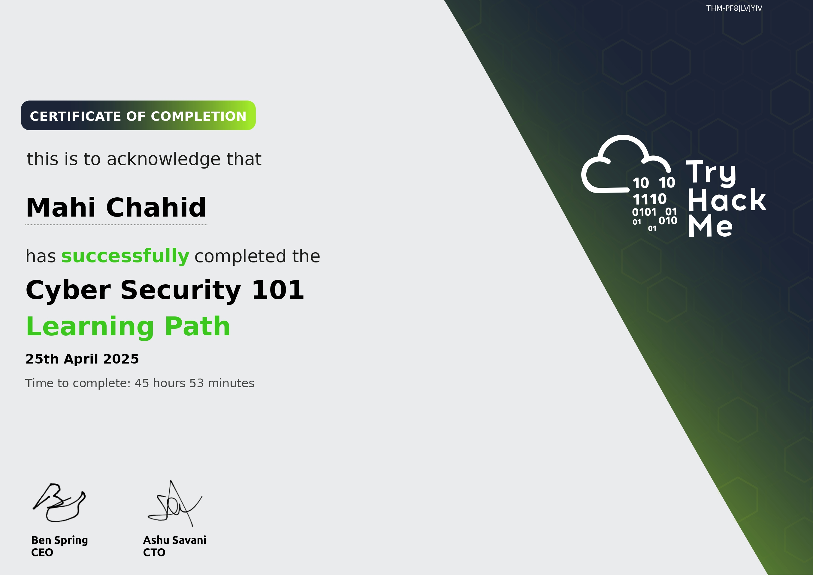

Projets & Réalisations
CESS
{kind=link}
Date d'obtention : 2021-2022
📄 Certificat : CESS – Technique de Transition Informatique
Ce diplôme atteste de mes compétences acquises en technique de transition informatique, validé par le Collège des Étoiles. Au cours de cette année, j'ai développé des compétences fondamentales dans plusieurs domaines clés de l'informatique et des technologies.
Compétences acquises :
- Maîtrise des concepts de programmation et de développement logiciel
- Utilisation des outils de gestion de projets informatiques
- Formation en systèmes d’exploitation (Linux, Windows)
- Initiation à la virtualisation et à la gestion des infrastructures
- Mise en place et gestion de réseaux informatiques et sécurité de base
- Réalisation de projets informatiques en équipe avec des méthodologies agiles
- Développement de jeux et d'applications avec Unity, incluant des projets pratiques et l’utilisation de moteurs de jeu pour des réalisations interactives.
🔧 Cette formation m'a permis de poser les bases solides pour continuer à évoluer dans le domaine de l'informatique, notamment en cybersécurité et en développement.
Pre Security - TryHackMe
{kind=link}
Date d'obtention : Avril 2025
📄 Certificat : Pre Security – TryHackMe
Ce certificat valide les compétences fondamentales en cybersécurité acquises à travers le parcours "Pre Security" sur la plateforme TryHackMe.
Compétences acquises :
- Compréhension des bases du réseau (IP, DNS, HTTP, etc.)
- Utilisation de la ligne de commande (Linux, Bash)
- Gestion des systèmes de fichiers et des permissions
- Notions d’infrastructure informatique et de virtualisation
- Introduction aux concepts clés en cybersécurité (menaces, acteurs, bonnes pratiques)
🔐 Ce parcours pose les bases essentielles pour progresser vers l’analyse SOC, les CTFs et la Threat Hunting.
Cyber Security 101 - TryHackMe
{kind=link}
Date d'obtention : Avril 2025
📄 Certificat : Cyber Security 101 – TryHackMe
Ce certificat atteste de l’acquisition de compétences essentielles en cybersécurité à travers le parcours "Cyber Security 101" proposé par la plateforme TryHackMe.
Compétences acquises :
- Compréhension approfondie des fondamentaux de la cybersécurité
- Introduction aux cyberattaques et aux vecteurs de compromission
- Connaissance des modèles de sécurité (CIA Triad, Kill Chain, etc.)
- Familiarisation avec les rôles et outils utilisés en Blue Team & Red Team
- Développement d’une approche défensive face aux menaces informatiques
🔐 Ce parcours offre une base solide pour se spécialiser dans l’analyse SOC, la réponse à incident et l’exploration de techniques offensives et défensives.
Projet 4

Description du projet 4. Ce projet est dédié à...